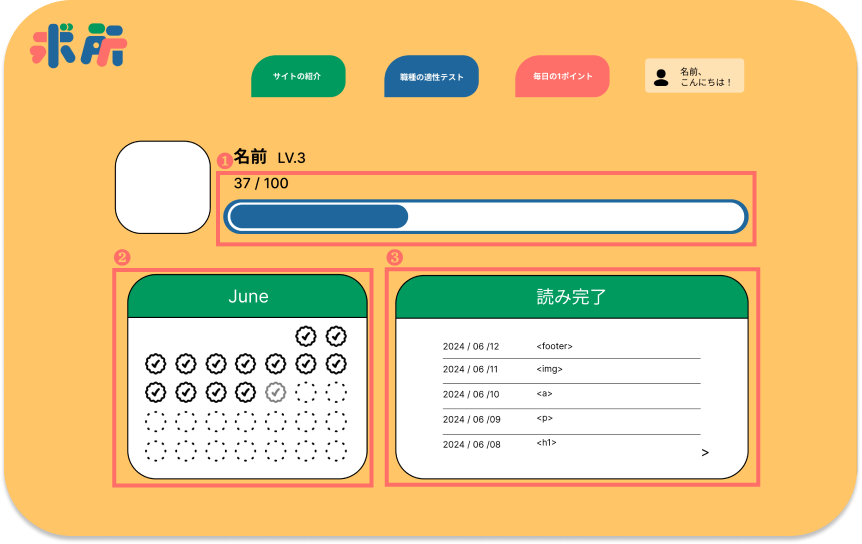

サイトの紹介
Web関連の仕事に興味を持っている人々に対し、自身がその仕事に 適しているかどうかをよりよく知るための方向性を提供し、Web仕 事への不安を解消し、さらに学びたいという意欲を高める！
使い方
Webに関する職種の適性テストから学習ガイドを作成して、自分に何の職種を適しているかどうかをより理解できる！
毎日少しずつ学びながら、HTMLとCSSの基礎を徐々に固めることができます！

毎日ゲームみたいで基礎知識を学んで、徐々にウェブ関連の職業に自信を持てるようになりたい方！ぜひ登録してみてくださいね！
すでにアカウントをお持ちの方！こちらをクリックしてください！
ユーザーページ紹介

❶知識を読むことや毎日のチェックインで経験値を獲得できます。
❷毎日のチェックイン！毎日少しずつ学ぶ習慣を身につけよう！
❸読んだ知識点は復習することができます。ログインすると、閲覧した内容がすべて詳細な知識点の説明として表示されます。